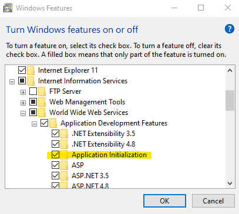
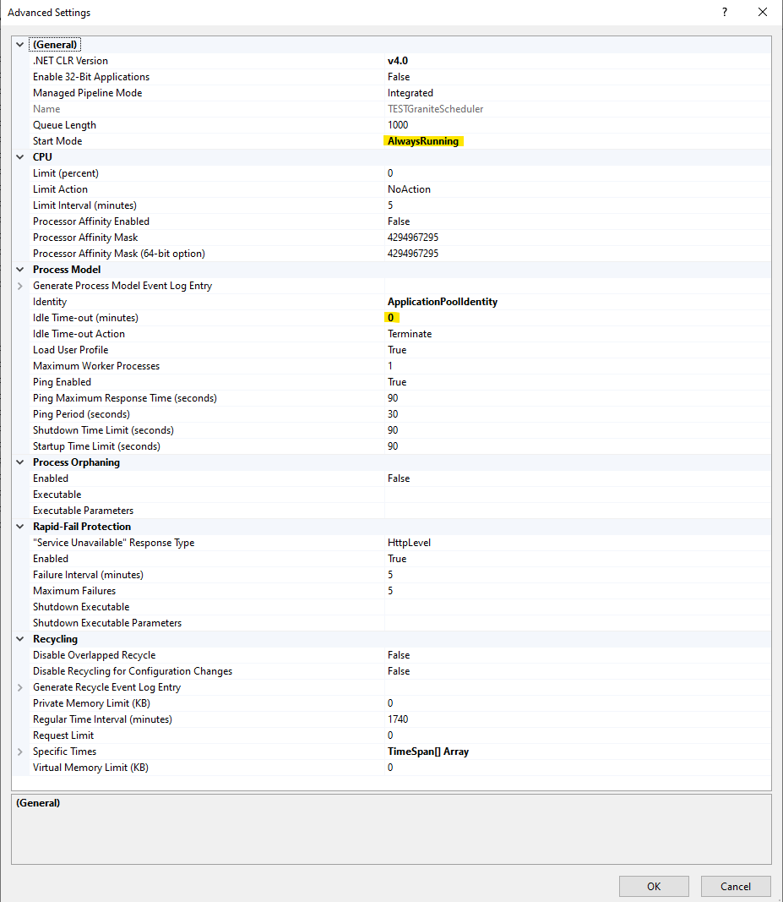
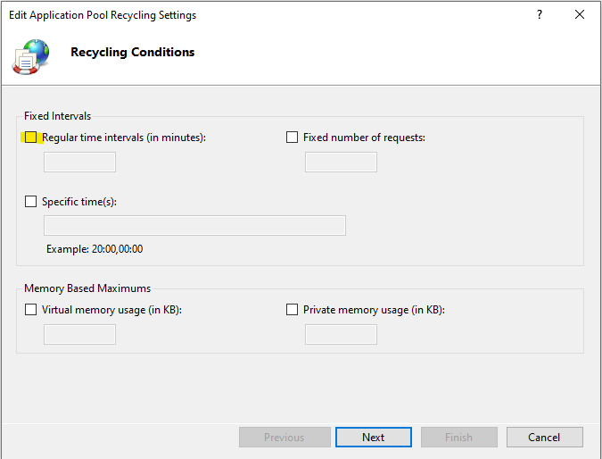
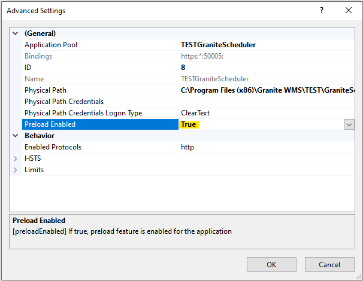
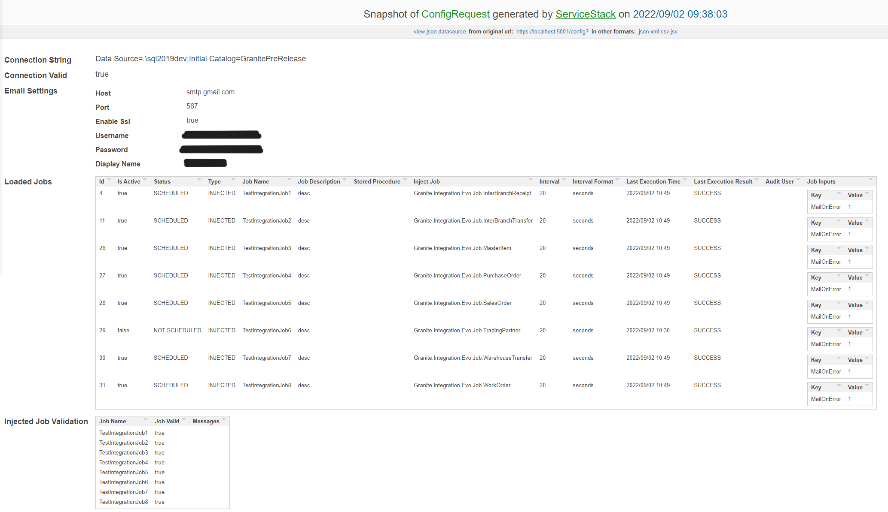
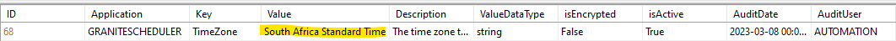
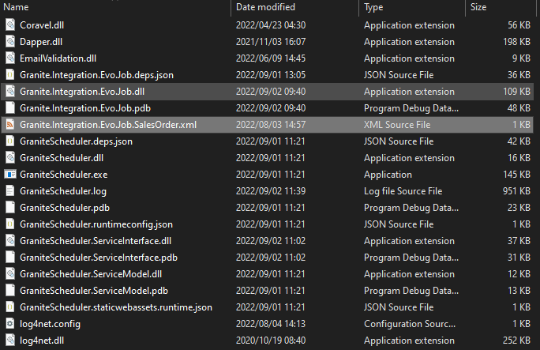

Manual
The Granite Scheduler is an IIS application that can be used to schedule execution of SQL stored procedures, sending emails using the Utility API, and special integration jobs for fetching documents from ERP systems.
Setup
Prerequisites
- IIS
- ASP.NET Core 8 Hosting Bundle
- Database tables:
ScheduledJobsScheduledJobsHistoryScheduledJobInputSystemSettings
Installation
-
Ensure that your SystemSettings table contains the default settings that GraniteScheduler uses:
INSERT [dbo].[SystemSettings] ([Application], [Key], [Value], [Description], [ValueDataType], [isEncrypted], [isActive], [AuditDate], [AuditUser]) VALUES ('GraniteScheduler', 'TimeZone', '', 'The time zone that will be used when scheduling CRON jobs', 'string', 0, 1, GETDATE(), 'AUTOMATION'), ('GraniteScheduler', 'UtilityApiUrl', '', 'The UtilityAPI URL', 'string', 0, 1, GETDATE(), 'AUTOMATION') -
Ensure that the folder that you have installed GraniteScheduler to has full access enabled for all users. This will ensure that the application log files can be created
-
Add GraniteScheduler to IIS running as
https
Appsettings
Configure your database connection in appsettings.json:
"ConnectionStrings": {
"GraniteConnection": "Server=.\\sql2019dev;Database=GraniteLIVE;User ID=username;Password=password;"
}
IIS
In order for GraniteScheduler to start up when the server boots up, ensure that the IIS Application Initilization module is installed:

Next, go to Application Pools in IIS, right click the GraniteScheduler application pool and select Advanced Settings.
Ensure that you set the Start Mode to AlwaysRunning and the Idle Time-Out to 0:

Right click the application pool again and select Recycling. Untick the Regular Intervals checkbox:

Now right click on the GraniteScheduler site in the left pane, go to Manage Website and select Advanced Settings. Change Preload Enabled to true

Logging
Logging can be configured in the nlog.config file
<?xml version="1.0" encoding="utf-8" ?>
<nlog xmlns="http://www.nlog-project.org/schemas/NLog.xsd"
xmlns:xsi="http://www.w3.org/2001/XMLSchema-instance"
autoReload="true"
internalLogLevel="Info"
internalLogFile="c:\temp\internal-nlog-AspNet.txt">
<!-- enable asp.net core layout renderers -->
<extensions>
<add assembly="NLog.Web"/>
</extensions>
<targets>
<target xsi:type="File"
name="applicationLogs"
fileName="Granite.Scheduler.log"
layout="${longdate}|${event-properties:item=EventId:whenEmpty=0}|${level:uppercase=true}|${mdlc:userName}|${logger}|${message} ${exception:format=tostring}"
archiveFileName="Granite.Scheduler.{#}.log"
archiveNumbering="DateAndSequence"
archiveEvery="Day"
archiveAboveSize="10485760"
archiveDateFormat="yyyy-MM-dd"
maxArchiveFiles="7" />
<!-- File Target for own log messages with extra web details using some ASP.NET core renderers -->
<target xsi:type="File"
name="innerWorkigsLogs"
fileName="Granite.Scheduler-${shortdate}.Inner.log"
layout="${longdate}|${event-properties:item=EventId:whenEmpty=0}|${level:uppercase=true}|${logger}|${mdlc:userName}|${message} ${exception:format=tostring}|url: ${aspnet-request-url}|action: ${aspnet-mvc-action}|${callsite}" />
<target xsi:type="Console"
name="lifetimeConsole"
layout="${MicrosoftConsoleLayout}" />
</targets>
<rules>
<!-- minlevel="Error"-->
<!-- minlevel="Info"-->
<logger name="*" minlevel="Error" writeTo="applicationLogs" />
</rules>
</nlog>
To configure the level of logging, set the minlevel value for logger name="*" in the rules section.
Config page
Once you have set up GraniteScheduler as described above, be sure to browse to the /config page to check that everything is configured correctly and that the application is connecting to the Granite database
Here is an example of a config page after some jobs have been added to the ScheduledJobs table:

How it works
Granite Scheduler picks up jobs from the ScheduledJobs table and executes them based on the configured schedule.
When a job executes, the Scheduler will check for any inputs in the ScheduledJobInputs table.
After the job has executed, an entry is logged in the ScheduledJobsHistory table. Here you can see the result of the execution, as well as what inputs were used when executing the job.
For more information on what you can do with job inputs, see the job types section for the details of what each job type can do.
Configuring Schedules
In this section we'll take a look at the various ways you can configure recurring jobs, as well as how to configure once off jobs.
Interval
The simplest way to set up your schedule is using a timed interval. To do this, set your IntervalFormat to one of the following:
- Seconds
- Minutes
- Hours
Then set the Interval column to the number of seconds, minutes, or hours you want the job to recur on.
This is how we would set a procedure to execute every ten minutes:
| ID | isActive | JobName | JobDescription | Type | StoredProcedure | Interval | IntervalFormat | Status | LastExecutionTime | LastExecutionResult | AuditDate | AuditUser |
|---|---|---|---|---|---|---|---|---|---|---|---|---|
| 1 | True | SyncDocuments | Fetch documents from ERP | STOREDPROCEDURE | SyncProcedure | 10 | MINUTES | NULL | NULL | NULL | 2022-05-23 08:35:50.427 | 0 |
CRON Expressions
CRON expressions are what will allow us to schedule jobs to run at a specific time of day and even on specific days of the week.
They can be a little tricky to get right, but the basics are that there are 5 places (separated by spaces) where you can specify values, each corresponding to a different measure of time:
* * * * *
| | | | |_ day of week
| | | |___ month
| | |_____ day of month
| |_______ hour
|_________ minute
30 09 * * 1
0 08-17/2 * * 1-5
To use a CRON expression on your job, set your IntervalFormat to CRON and put your expression (with spaces) in the Interval field. For example:
| ID | isActive | JobName | JobDescription | Type | StoredProcedure | Interval | IntervalFormat | Status | LastExecutionTime | LastExecutionResult | AuditDate | AuditUser |
|---|---|---|---|---|---|---|---|---|---|---|---|---|
| 1 | True | SendMondayReport | Job to send reports | EmailExample | 30 09 * * 1 | CRON | NULL | NULL | NULL | 2022-05-23 08:35:50.427 | 0 |
Note
There are different implementations of CRON syntax, some have special tags that are not usable outside of that specific software.
Your best bet is to use https://crontab.guru/ to work out an expression that works for you while avoiding any tags marked as non-standard
Be sure to test your CRON expression before deploying!
If your CRON expression is not triggering your job as you'd expect it to, try explicitly setting the timezone for the Scheduler to use in the SystemSettings table (schedules and tokens use the server's local time):

List of valid time zones
- Dateline Standard Time
- UTC-11
- Aleutian Standard Time
- Hawaiian Standard Time
- Marquesas Standard Time
- Alaskan Standard Time
- UTC-09
- Pacific Standard Time (Mexico)
- UTC-08
- Pacific Standard Time
- US Mountain Standard Time
- Mountain Standard Time (Mexico)
- Mountain Standard Time
- Yukon Standard Time
- Central America Standard Time
- Central Standard Time
- Easter Island Standard Time
- Central Standard Time (Mexico)
- Canada Central Standard Time
- SA Pacific Standard Time
- Eastern Standard Time (Mexico)
- Eastern Standard Time
- Haiti Standard Time
- Cuba Standard Time
- US Eastern Standard Time
- Turks and Caicos Standard Time
- Paraguay Standard Time
- Atlantic Standard Time
- Venezuela Standard Time
- Central Brazilian Standard Time
- SA Western Standard Time
- Pacific SA Standard Time
- Newfoundland Standard Time
- Tocantins Standard Time
- E. South America Standard Time
- SA Eastern Standard Time
- Argentina Standard Time
- Greenland Standard Time
- Montevideo Standard Time
- Magallanes Standard Time
- Saint Pierre Standard Time
- Bahia Standard Time
- UTC-02
- Mid-Atlantic Standard Time
- Azores Standard Time
- Cabo Verde Standard Time
- Coordinated Universal Time
- GMT Standard Time
- Greenwich Standard Time
- Sao Tome Standard Time
- Morocco Standard Time
- W. Europe Standard Time
- Central Europe Standard Time
- Romance Standard Time
- Central European Standard Time
- W. Central Africa Standard Time
- GTB Standard Time
- Middle East Standard Time
- Egypt Standard Time
- E. Europe Standard Time
- Syria Standard Time
- West Bank Gaza Standard Time
- South Africa Standard Time
- FLE Standard Time
- Jerusalem Standard Time
- South Sudan Standard Time
- Russia TZ 1 Standard Time
- Sudan Standard Time
- Libya Standard Time
- Namibia Standard Time
- Jordan Standard Time
- Arabic Standard Time
- Turkey Standard Time
- Arab Standard Time
- Belarus Standard Time
- Russia TZ 2 Standard Time
- E. Africa Standard Time
- Volgograd Standard Time
- Iran Standard Time
- Arabian Standard Time
- Astrakhan Standard Time
- Azerbaijan Standard Time
- Russia TZ 3 Standard Time
- Mauritius Standard Time
- Saratov Standard Time
- Georgian Standard Time
- Caucasus Standard Time
- Afghanistan Standard Time
- West Asia Standard Time
- Russia TZ 4 Standard Time
- Pakistan Standard Time
- Qyzylorda Standard Time
- India Standard Time
- Sri Lanka Standard Time
- Nepal Standard Time
- Central Asia Standard Time
- Bangladesh Standard Time
- Omsk Standard Time
- Myanmar Standard Time
- SE Asia Standard Time
- Altai Standard Time
- W. Mongolia Standard Time
- Russia TZ 6 Standard Time
- Novosibirsk Standard Time
- Tomsk Standard Time
- China Standard Time
- Russia TZ 7 Standard Time
- Malay Peninsula Standard Time
- W. Australia Standard Time
- Taipei Standard Time
- Ulaanbaatar Standard Time
- Aus Central W. Standard Time
- Transbaikal Standard Time
- Tokyo Standard Time
- North Korea Standard Time
- Korea Standard Time
- Russia TZ 8 Standard Time
- Cen. Australia Standard Time
- AUS Central Standard Time
- E. Australia Standard Time
- AUS Eastern Standard Time
- West Pacific Standard Time
- Tasmania Standard Time
- Russia TZ 9 Standard Time
- Lord Howe Standard Time
- Bougainville Standard Time
- Russia TZ 10 Standard Time
- Magadan Standard Time
- Norfolk Standard Time
- Sakhalin Standard Time
- Central Pacific Standard Time
- Russia TZ 11 Standard Time
- New Zealand Standard Time
- UTC+12
- Fiji Standard Time
- Kamchatka Standard Time
- Chatham Islands Standard Time
- UTC+13
- Tonga Standard Time
- Samoa Standard Time
- Line Islands Standard Time
Run once
You can use the ONCE IntervalFormat to schedule a job to run one time only. This is useful for running ad hoc tasks that might take too long to execute within a prescript, or sending once off mails like a picking complete notification.
When the IntervalFormat is set to ONCE, the Interval field is not taken into account - it can be left empty.
On completion of a ONCE job, the job will be removed from the ScheduledJobs table. It's inputs will also be removed from the ScheduledJobInput table. These are removed after execution regardless of whether the job was successful.
The job's execution can still be viewed in the ScheduledJobsHistory table, and you will be able to see it's inputs in JSON format in the Inputs column.
Job types
This section shows you the basics of configuring each job type in the ScheduledJobs and ScheduledJobInputs tables.
The currenlty supported job types are:
Stored Procedure Jobs
To schedule a Stored Procedure to run, simply add a row to the ScheduledJobs table. For example:
| ID | isActive | JobName | JobDescription | Type | StoredProcedure | InjectJob | Interval | IntervalFormat | Status | LastExecutionTime | LastExecutionResult | AuditDate | AuditUser |
|---|---|---|---|---|---|---|---|---|---|---|---|---|---|
| 1 | True | MyJob | Test job that executes a stored procedure | STOREDPROCEDURE | MyProcedure | NULL | 5 | MINUTES | NULL | NULL | NULL | 2022-05-23 08:35:50.427 | 0 |
If you need to pass values from the ScheduledJobInput table into your stored procedure, you can do so by adding the @input table parameter to your stored procedure like this:
CREATE OR ALTER PROCEDURE [MyProcedure]
@input dbo.ScriptInputParameters READONLY
The @input table will contain all of the entries from the ScheduledJobInput table that are configured for your job.
If your ScheduledJobInput contains the following:
| ID | JobName | Name | Value |
|---|---|---|---|
| 1 | MyJob | Category | PACK |
| 2 | MyJob | Location | REC |
Inside [MyProcedure] we can fetch the values from @input like this:
CREATE OR ALTER PROCEDURE [MyProcedure]
@input dbo.ScriptInputParameters READONLY
DECLARE @Category varchar(50)
DECLARE @Location varchar(50)
SELECT @Category = [Value] FROM @input WHERE [Name] = 'Category'
SELECT @Location = [Value] FROM @input WHERE [Name] = 'Location'
Email Jobs
Email jobs make use of the Custodian API to send emails. Ensure that the CustodianApiUrl entry in SystemSettings is configured correctly before you try to schedule any emails.
To schedule an email to be sent, we add a record to the ScheduledJobs table
| ID | isActive | JobName | JobDescription | Type | StoredProcedure | InjectJob | Interval | IntervalFormat | Status | LastExecutionTime | LastExecutionResult | AuditDate | AuditUser |
|---|---|---|---|---|---|---|---|---|---|---|---|---|---|
| 1 | True | EmailMorningReports | Send daily reports to management | NULL | NULL | 0 8 * * 1-5 | CRON | NULL | NULL | NULL | 2022-05-23 08:35:50.427 | 0 |
We also need to add some entries to the ScheduledJobInput table to specify recipients, email content, and any attachments we want to send.
The parameters available to Email jobs are as follows:
| Name | Required | Description |
|---|---|---|
| Subject | Y | The subject line of the email |
| EmailTemplate | N | The name of the email template you want to use. If EmailTemplate is used, the content of the mail will be the rendered template |
| EmailBody | N | The content of the email you want to send. Use instead of EmailTemplate to send a simple mail using just the text in EmailBody as the body of the email |
| ToEmailAddresses | N | Semicolon delimited list of email addresses to send the mail to |
| CcEmailAddresses | N | Semicolon delimited list of email addresses to CC the mail to |
| BccEmailAddresses | N | Semicolon delimited list of email addresses to BCC the mail to |
| ReportAttachment | N | SSRS Report path of the report you want to attach |
| ExcelAttachment | N | Table or view name that you want to attach as an excel sheet |
| FileAttachment | N | File path of the file you want to attach. NB this path is relative to wherever the Utility API is installed. |
Let's add the details we need to send our email to the ScheduledJobInput table:
| ID | JobName | Name | Value |
|---|---|---|---|
| 1 | EmailMorningReports | Subject | Morning reports |
| 2 | EmailMorningReports | EmailBody | Please see attached your daily reports |
| 3 | EmailMorningReports | ToEmailAddresses | manager@warehouse.com;finance@warehouse.com |
| 4 | EmailMorningReports | ReportAttachment | /PickingReport |
| 5 | EmailMorningReports | ReportAttachment | /ReceivingReport |
As you can see, all of the inputs reference job using JobName. For each of the attachment types you can add multiple entries to attach multiple reports of the same type, as we have done here.
Note
There is no way to pass parameters to SSRS reports that are to be attached to an email. You may need to edit your report so that it can be executed without the need to pass parameters. Likewise for Excel attachments, it would be best to create a view that returns only the results you want to attach to your email.
Injected Jobs (Integration Jobs)
Injected jobs allow us to run code from an external DLL. At the moment the main reason to use this is for integration jobs. More Injectable jobs may be released in the future as required.
For this to work, the DLL and an XML provider file must be copied into the root path of the GraniteScheduler:

The provider file needs to bind the GraniteScheduler IInjectableJob interface to a specific class within your DLL. See the below example of a provider file:
<module name="Provider">
<bind
service="GraniteScheduler.ServiceModel.Types.IInjectableJob, GraniteScheduler.ServiceModel"
to="Granite.Integration.Evo.Job.SalesOrder, Granite.Integration.Evo.Job"/>
</module>
When you configure an InjectedJob the InjectJob field on the ScheduledJobs table must contain the name of the XML provider file (without the file extension) that you wish to use:
| ID | isActive | JobName | JobDescription | Type | StoredProcedure | InjectJob | Interval | IntervalFormat | Status | LastExecutionTime | LastExecutionResult | AuditDate | AuditUser |
|---|---|---|---|---|---|---|---|---|---|---|---|---|---|
| 1 | True | SalesOrderSync | Sync SOs from Evo using IntegrationDocumentQueue | INJECTED | NULL | Granite.Integration.Evo.Job.SalesOrder | 1 | HOURS | NULL | NULL | NULL | 2022-05-23 08:35:50.427 | 0 |
GraniteScheduler will use the XML file to find the DLL file and execute the required code
SQL Table Jobs
The following is the information common to the two jobs above.
You can get sql insert scripts for example jobs here.
Required JobInputs
TableName(string): The source table to either Archive or Delete from (e.g.MyBigTable). Avoid special characters like;,--,/*. For Delete Table Jobs specifically, only a limited set of tables is allowed and must be provided as the bare table name without schema; see the safety restrictions under Delete Table Jobs.WhereTemplate(string): A SQL predicate that filters rows to either Archive or Delete, using parameter placeholders like@FromDate,@Status(e.g.CreatedOn < @Cutoff AND Status = @Status). Injection characters like;,--,/*are rejected.WhereParams(JSON object): Name/value map for parameters referenced inWhereTemplate. Values are parsed into appropriate types when possible (null, bool, numbers, Guid, DateTime/DateTimeOffset). Example:{ "Cutoff": "2024-01-01T00:00:00Z", "Status": "Closed" }.
If any parameters referenced in WhereTemplate are missing from WhereParams (or vice versa), the job will not run.
Optional JobInputs and defaults
BatchSize(int, default 1000, valid 1–10000): Number of rows to move per batch. The job loops batches until no rows remain or time limit is reached.MaxExecutionMinutes(int, default 30, valid 1–480): Upper limit for a single run. The job stops gracefully when the time limit is reached.DryRun(bool, default false): If true, estimates and logs the number of rows matching the filter but does not modify any data.OptimizeTable(bool, default false): If true and rows were removed, runs table maintenance on the source table after processing.OptimizeMode(string, defaultReorganize): Table maintenance mode. Accepted values:Reorganize,Rebuild,Auto.OnlineIndexRebuild(bool, default true): Applies whenOptimizeModeisRebuild; attempts an ONLINE rebuild when supported.UpdateStatisticsAfterOptimization(bool, default depends on mode): AfterReorganizedefault is true; afterRebuilddefault is false (since rebuild updates stats).UpdateStatisticsFullScan(bool, default false): When updating statistics, use FULLSCAN.OptimizationThreshold(int, default 1000): Threshold for deciding whether to optimize after data movement. Note: validated by the system; current archive flow optimizes when rows were archived, independent of this threshold.
Date/Time Tokens for WhereParams
You can use dynamic, server-local date/time tokens in WhereParams to filter rows relative to “now” or “today” without hard-coding timestamps.
- Where they’re used: Only as values within
WhereParams(not insideWhereTemplate). - What they produce: A
DateTimeOffsetvalue bound as a SQLdatetimeoffsetparameter. - Validation: Tokens are validated before execution. Invalid tokens will fail the job’s input validation.
Syntax
${base[offsets][|rounding]}base(required):nowortodaynow= current server local date/time (DateTimeOffset.Now).today= current server local date at 00:00:00.000 (midnight).
offsets(optional, repeatable): One or more signed adjustments with a unit. Chaining is allowed.- Format:
+Nunitor-Nunit(no spaces), where N is an integer. - Units (case-sensitive):
s= secondsm= minutesh= hoursd= daysw= weeks (7 days each)M= months (uppercase M)y= years
- Examples:
-30d,+2h-15m,-1M+7d,-1y
- Format:
rounding(optional, after a single|):startOfDay→ 00:00:00.000endOfDay→ 23:59:59.9999999startOfMonth→ first day of month at 00:00:00.000endOfMonth→ last moment of the month (23:59:59.9999999)
Evaluation order
1) Start from base (server local time).
2) Apply all offsets left-to-right.
3) Apply rounding if present.
Important notes
- Units are case-sensitive:
m= minutes,M= months. - All calculations use the server's local time zone.
- Multiple offsets can be chained; they are applied in sequence.
Examples
- Rows older than 30 days:
- WhereTemplate:
CreatedOn < @Cutoff - WhereParams:
{ "Cutoff": "${now-30d}" }
- WhereTemplate:
- All of yesterday (inclusive):
- WhereTemplate:
CreatedOn >= @From AND CreatedOn <= @To - WhereParams:
{ "From": "${today-1d|startOfDay}", "To": "${today-1d|endOfDay}" }
- WhereTemplate:
- First day of last month at midnight:
${today-1M|startOfMonth}
- End of current month:
${now|endOfMonth}
- Two hours and 15 minutes from now:
${now+2h-15m}
- One year ago, end of that month:
${now-1y|endOfMonth}
Sample configuration
- Purge rows created before the start of the current day:
- WhereTemplate:
CreatedOn < @Cutoff - WhereParams:
{ "Cutoff": "${today|startOfDay}" }
- WhereTemplate:
- Archive rows created on or before the end of last month:
- WhereTemplate:
CreatedOn <= @Cutoff - WhereParams:
{ "Cutoff": "${now-1M|endOfMonth}" }
- WhereTemplate:
Troubleshooting tokens
- If a token is malformed (e.g., unknown base, bad unit, or syntax), the job input validation will fail with a log message indicating the problematic parameter.
- If you need fixed timestamps instead, provide ISO 8601 strings (e.g., "2025-08-01T00:00:00Z") instead of a token.
Archive Table Jobs
Use this job type to move rows from a source table into an archive table in batches, then delete the moved rows from the source. This helps keep operational tables lean while retaining data in an archive table.
- Job
Type:ARCHIVETABLE - Connection: Always uses the
GraniteConnectionfromappsettings.json. - Archive table name:
archive.<TableName>(created automatically if missing, usingSELECT INTOfrom the source structure). Note that indexes, keys, and constraints are not copied bySELECT INTOand may need to be created manually if required.
Archive table specific Optional JobInputs and defaults
OptimizeArchiveTable(bool, default false): If true and rows were archived, also runs table maintenance on the archive table.
Behavior and guarantees
- Batching and atomicity: Each batch performs INSERT into the archive table and DELETE from the source within a single transaction. If the DELETE fails, the batch is rolled back.
- Row selection: Uses a CTE to delete from and insert the output into the archive table.
- Estimation: Before modifying data, the job estimates the row count matching the filter for logging and dry runs.
- Time cap: The job respects
MaxExecutionMinutesand will pause further work when the limit is reached; subsequent scheduler runs continue from where it left off.
Example configuration
ScheduledJobs (example):
| ID | isActive | JobName | JobDescription | Type | StoredProcedure | InjectJob | Interval | IntervalFormat | Status | LastExecutionTime | LastExecutionResult | AuditDate | AuditUser |
|---|---|---|---|---|---|---|---|---|---|---|---|---|---|
| 42 | True | ArchiveOldOrders | Move closed orders older than 180 days | ARCHIVETABLE | NULL | NULL | 1 | HOURS | NULL | NULL | NULL | 2025-08-18 08:00:00.000 | admin |
ScheduledJobInputs for ArchiveOldOrders:
| ID | JobName | Name | Value |
|---|---|---|---|
| 1 | ArchiveOldOrders | TableName | dbo.Orders |
| 2 | ArchiveOldOrders | WhereTemplate | CreatedOn < @Cutoff AND Status = @Status |
| 3 | ArchiveOldOrders | WhereParams | { "Cutoff": "${now-180d}", "Status": "Closed" } |
| 4 | ArchiveOldOrders | BatchSize | 2000 |
| 5 | ArchiveOldOrders | MaxExecutionMinutes | 20 |
| 6 | ArchiveOldOrders | DryRun | false |
| 7 | ArchiveOldOrders | OptimizeTable | true |
| 8 | ArchiveOldOrders | OptimizeArchiveTable | false |
| 9 | ArchiveOldOrders | OptimizeMode | Reorganize |
Notes:
- The job runs hourly. Adjust Interval/IntervalFormat as needed, or use a CRON schedule.
- WhereParams values are parsed into appropriate types; strings can be used when you want literal comparisons. Token-style values like ${...} resolve using server local time (e.g., ${now-180d}).
- The archive table dbo.OrdersArchive is created automatically if it does not exist.
Delete Table Jobs
Use this job type to delete rows from a table in safe, bounded batches using a parameterized WHERE filter.
- Job
Type:DELETETABLEDATA - Connection: Uses the
GraniteConnectionfromappsettings.json.
Behavior
- Estimation: Before deleting, the job estimates the row count matching the filter for logging and dry runs.
- Batching: Executes
DELETE TOP(@BatchSize) ... WHERE {WhereTemplate}repeatedly until no rows match or the time cap is hit. No explicit ORDER BY; when many rows match, the specific rows deleted per batch are not ordered. - Time cap: Respects
MaxExecutionMinutesand continues on the next scheduled run. - Optimization: When enabled, runs post-delete maintenance on the source table using the configured options.
Warning
Safety restrictions: Delete Table Jobs are allowlisted to prevent accidental data loss. Only the following tables are permitted:
- ScheduledJobsHistory
- IntegrationLog
- LabelPrintQueue
- IntegrationDocumentQueue
- EmailLog
- InventoryDailyBalance
Notes:
- Provide TableName as shown above (bare table name, no schema). For example, use IntegrationLog, not dbo.IntegrationLog.
- Jobs targeting any other table will fail input validation and will not run.
Example configuration
ScheduledJobs (example):
| ID | isActive | JobName | JobDescription | Type | StoredProcedure | InjectJob | Interval | IntervalFormat | Status | LastExecutionTime | LastExecutionResult | AuditDate | AuditUser |
|---|---|---|---|---|---|---|---|---|---|---|---|---|---|
| 43 | True | PurgeOldIntegrationLog | Delete IntegrationLog rows older than 7 days | DELETETABLEDATA | NULL | NULL | 0 2 * * * | CRON | NULL | NULL | NULL | 2025-08-18 08:00:00.000 | admin |
ScheduledJobInputs for PurgeOldIntegrationLog:
| ID | JobName | Name | Value |
|---|---|---|---|
| 1 | PurgeOldIntegrationLog | TableName | IntegrationLog |
| 2 | PurgeOldIntegrationLog | WhereTemplate | AuditDate < @Cutoff |
| 3 | PurgeOldIntegrationLog | WhereParams | { "Cutoff": "${now-7d}" } |
| 4 | PurgeOldIntegrationLog | BatchSize | 5000 |
| 5 | PurgeOldIntegrationLog | MaxExecutionMinutes | 15 |
| 6 | PurgeOldIntegrationLog | DryRun | false |
| 7 | PurgeOldIntegrationLog | OptimizeTable | true |
| 8 | PurgeOldIntegrationLog | OptimizeMode | Reorganize |
Notes:
- The CRON example runs daily at 02:00 (server local time). You can use minutes/hours intervals as well.
- TableName must be one of the allowlisted tables and provided as a bare name (e.g., IntegrationLog).
- WhereParams values can be typed (dates, numbers, booleans) and token-style values like ${now-7d} are resolved relative to server local time.
- Optimization is optional and only runs if rows were deleted during this run.
Troubleshooting
If you get an error message relating to ASP.Net when browsing GraniteScheduler, ensure that you have the correct hosting bundle installed. The Webdesktop uses version 5, which will not work with GraniteScheduler. You can safely install version 6 alongside version 5
Always be sure to check your GraniteScheduler log file for more info. If your job is failing, the log will most likely tell you why
Tips, tricks, and reminders
- If isActive on the ScheduledJob table is set to False the job will not be scheduled to run.
- The JobName must be unique, it is the value that links ScheduledJobs to ScheduledJobInput
- You can have multiple inputs per job in the ScheduledJobInput table
- Status, LastExecutionTime and LastExecutionResult will be updated automatically by GraniteScheduler
- The ScheduledJobsHistory table will contain an entry for each execution of a job. Think of it as the Transactions table for jobs